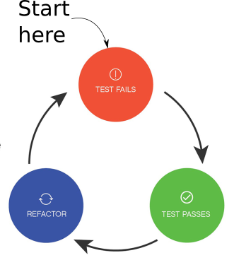

1. Module description
-
Module description Programming Concepts 2
-
Previous Year PRC2 2020 web page
This site contains the up-to-date course material, exercises and announcements about PRC2 (Programming Concepts 2: the Test Driven Way), starting in February 2021.
Responsible Teachers for 2021: PRC2: Martijn Bonajo, Frank van Gennip, Richard van den Ham, and Pieter van den Hombergh with editorial help from Linda Urselmans.
2. Study materials


-
For the Java basics and advanced features we are using Cay Horstmann’s fine books from the core Java series. They are on the book-list from September.
-
The exercises will be published via a personal svn repository on fontysvenlo.org.
You can find to which group you belong through peerweb -
The Junit version is Junit 5.
-
"Using frameworks for testing" will start with using AssertJ, which is a modern and up to date Open Source testing framework. The documentation is of excellent quality and fun to read.
-
JavaFX bonus chapter to Core Java Volume I
|
Read the corresponding Horstmann book chapters and do the tutorials before you come to class. This will make
the lessons more effective for you, because the questions that you might have
from studying could be answered immediately. |
3. Topics 2021
In the topics table below, Vol I is Core Java Volume I, Fundamentals and Vol II is Core Java Volume II, Advanced Features both by Cay S. Horstmann and both in the eleventh edition.
| Week | Topic | Book | Exercises |
|---|---|---|---|
Test Driven, Unit Testing basics |
- |
FirstContact, Phone book, Mini BAr, Simple List. |
|
Parameterized Tests |
Vol I 5.6 enum classes |
Fraction, Flawless Password, Enum Calculator |
|
Design for testability, Mockito |
- |
Perishable products, CandyVendingMachine as study object. |
|
Generics |
Vol I Ch 8 |
Generic Box, Shape Filter, Ranges in 3 parts |
|
Lambda and Streams |
Vol I Ch 6.2, Vol II Ch 1 |
Simple Stream, Csv Objects, Lambda Library MinMaxCollector |
|
Reflection |
Vol I Ch 5.7, |
Generater sql table from entity, Mapper using MethodHandles. Generate JSON from entity using mapper. |
|
Database access using JDBC |
Vol II Ch 5 |
Data base access using generic methods and the mapper from wk 6 |
|
JavaFX and Java Modules |
Vol I bonus Ch (pdf), Vol II Ch 9 |
||
Statemachine, regex |
Vol I, chp 5.7,Vol II Ch 5 |
GumballMachine, GradeCapture (regex), templating engine |
|
Date/Time API and Internationalization |
TBD |
||
Exceptions, Assertions and logging, File(I/O) |
TBD |
||
Programmers responsibility: Security |
TBD |
||
Not used, buffer |
- |
|
You should start with the exercises in the week they are listed in and hand them in
by committing your work to your personal subversion repository. We will use a strict deadline policy for the assignments. Completion of all the exercises grant admission to the performance assessment! |
4. Way of Working during practical hours.
 The way of working with the practical assignments is as follows:
-
Each student has a personal subversion repository
-
The teachers will add the starter project for the assignment in due time
to all student repositories, which are then available for checkout by the students -
The students will work on the assignment and work TDD style.
-
Write a test for a requirement (typically a method),
see it showing failure (RED), -
then implement the method to turn the test GREEN.
-
If GREEN, svn-commit both test-class AND implementing class.
-
-
If the assignment is complete (all requirements covered with tests, all tests green and code coverage at an appropriate level ) ask any of the teachers or student assistants to run the teachers test on your code.
-
The teachers will not explicitly test your tests, only your implementation code, but will provide you with the test report.
-
They will run your tests, to see if your test report is in agreement with the teachers tests.
-
This procedure is similar to the one followed during the performance assessment at the end of the semester. The difference is that we will review not only the implementation, but will start with reviewing the tests. If there is no valid test, the implementation of the method will not be considered.
5. MS Teams channel(s)
For questions and answers thus documenting them and also discussions and explanations, sharing information, links and other things between students and lecturers, feel free to use the MS-Teams PRC2 channel: Slack invitation link.
Please use the channel #prc2class. We will use this channel to ask and and answer questions during and after class.
| Please note that the content of this channel will appear on youtube because we are recording the lectures. So use proper language. |
You are only allowed to use a student.fontys.nl email address. Using slack is optional, but if the students share their knowledge there, this can be a helpful source and learning environment.
6. Automatic correction of practical exercises.
In PRC1 you have become acquainted with automatic tests. In PRC2 you will not only write the implementation, but also the tests. These test need testing too.
The approach follow is having not only a correct implementation, but also some broken implementations to test your tests.
The exact details are spelled out in the rules for the performance assessment.
In short you provide your own test code and implementation, we provide an implementation, our own tests and some broken implementations to make your tests have a nice red blush.
The ubiquitous question is always: Where do I start?
The answer is surprisingly simple: at the requirements of class, method or whatever you want to develop. And always start at the simple end.
So if a requirement says that a fresh Stack is empty, that means you can write a test that asserts that a new instance of your class reports that it is
empty when the isEmpty() is called.
The sources of this website are hosted at https://github.com/testfirstj/testfirstj.github.io